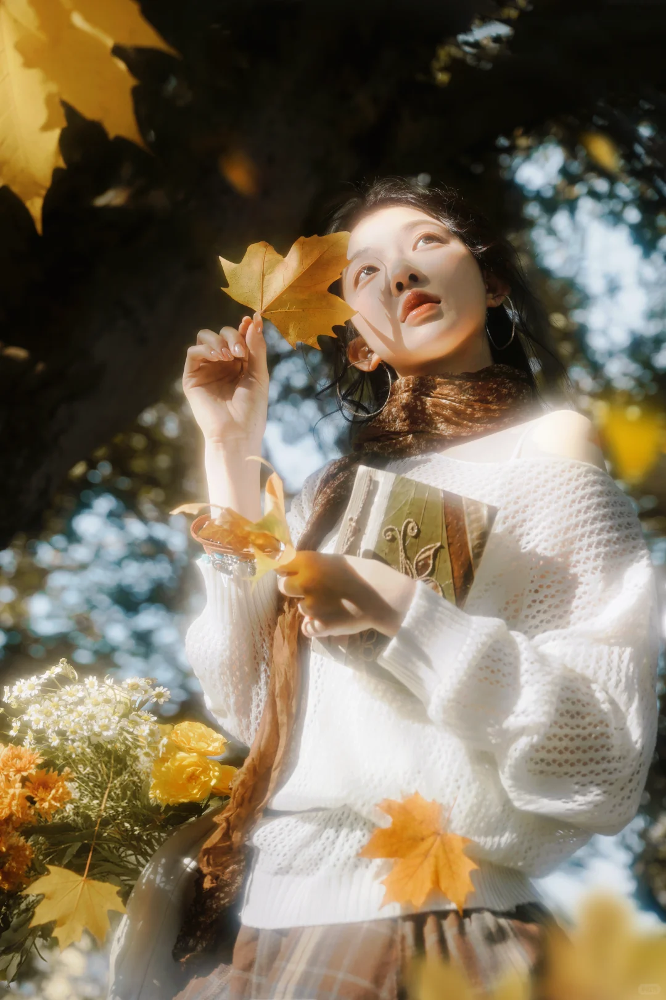
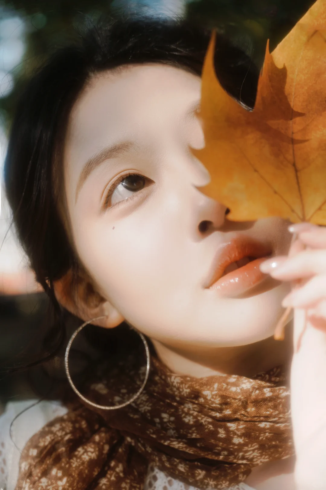
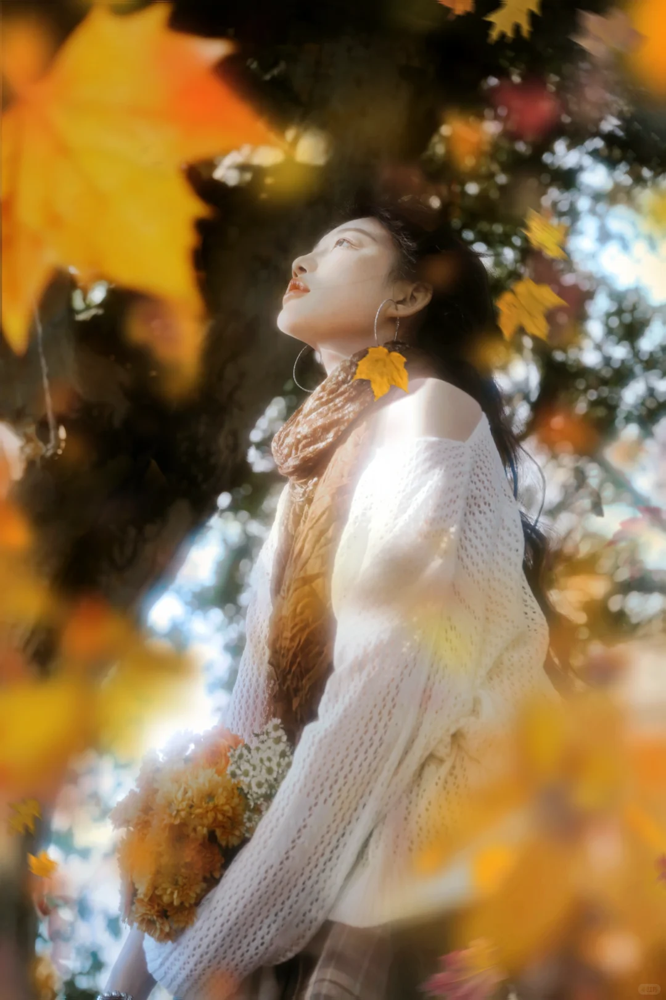
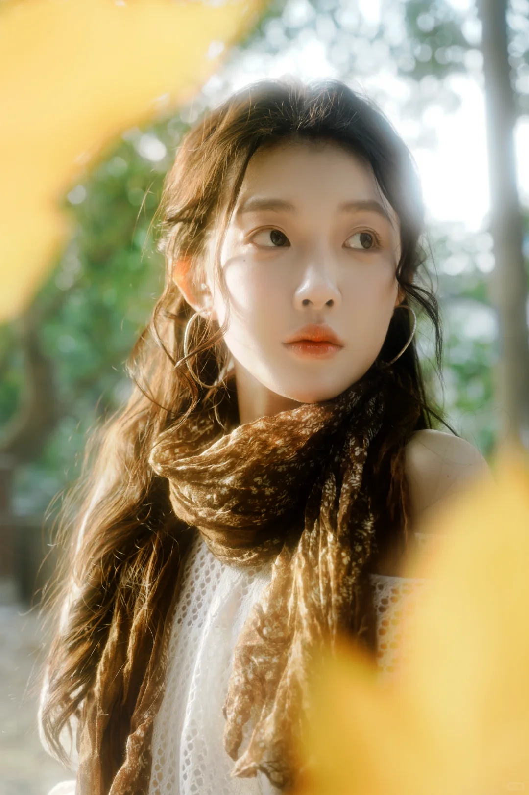
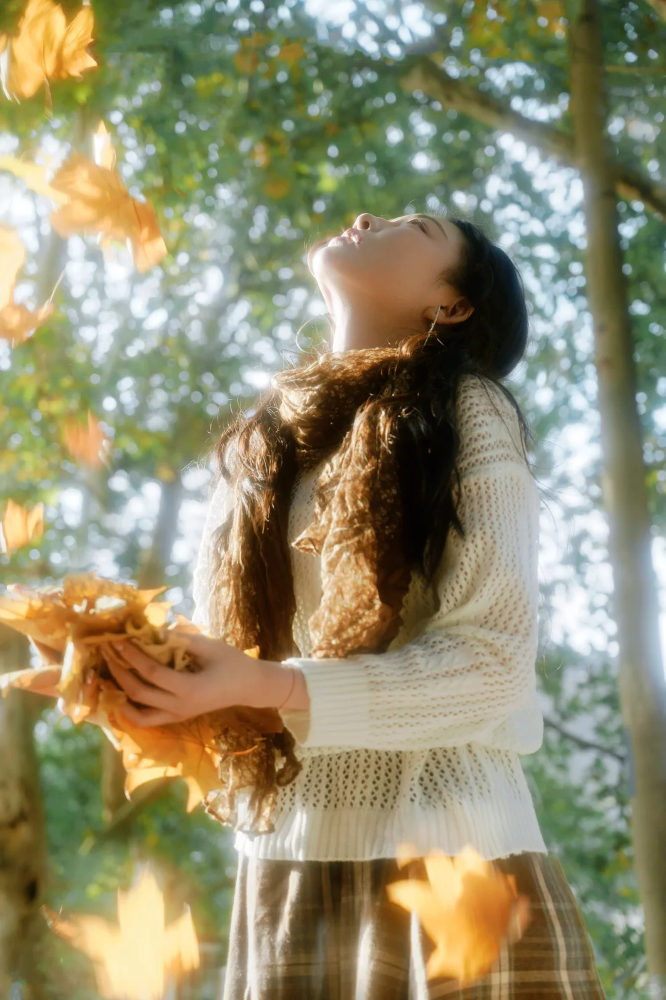
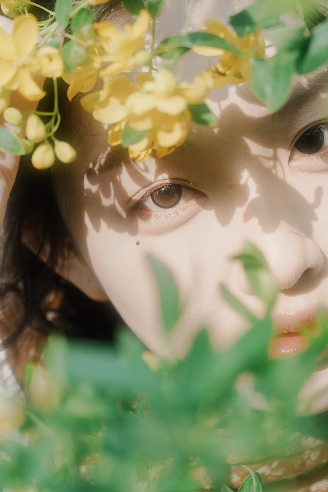
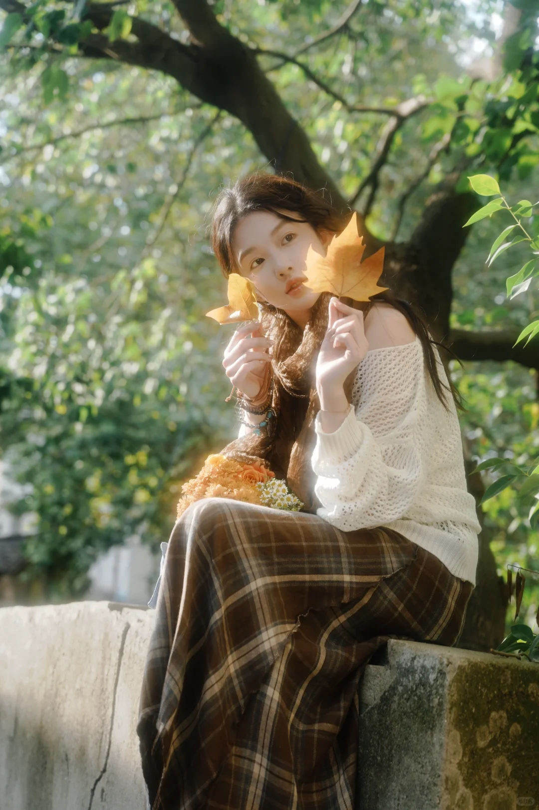

全景 · 必拍
完整造型与坐姿
机位：蹲低或坐低拍摄，竖构图，完整保留头部、上身、裙摆和坐姿。
光位：位于树荫边缘，侧后方轮廓光勾勒头发与叶片。
描述：坐在石墙或长椅上，双手举叶子靠近脸侧，身体微微前倾。
秋日林间的温柔感与微醺感。以金黄色、朦胧、自然、轻复古为主调，用树叶前景、斑驳光影、低机位和逆光制造包裹感。
| 参考画面 | 主景别 | 画面作用 | 可借鉴要点 |
|---|---|---|---|
 | 中景 | 展示人物、服装与花束关系 | 低机位、仰拍、逆光、叶片遮挡 |
 | 特写 | 强化面部情绪与秋叶互动 | 叶片贴近脸部，眼神向上，柔和高光 |
 | 近景 | 表现人物侧脸和秋日氛围 | 前景虚化，人物置于树叶之间 |
 | 近景 | 传达安静、温柔的肖像情绪 | 叶片框景，侧逆光，浅景深感 |
 | 中景 | 表现捧叶动作和身体姿态 | 抬头、双手抱叶、逆光轮廓 |
 | 特写 | 表现眼睛、花朵和光影细节 | 花叶遮脸，局部阴影投射 |
 | 全景 | 展示完整造型与环境关系 | 坐姿、树干、长裙和花束构成完整画面 |
地点：城市公园或植物园的林荫区域，优先寻找高大树木、低垂枝叶、落叶路、石阶或长椅。建议路线：林间小路 → 树下空地 → 石墙/长椅 → 花木或落叶区域。
时间：晴天上午适合清透画面，下午适合焦糖色与金黄色氛围。先拍远景、全景和中景，光线变柔后拍近景与特写。日期、落叶状态和预约待确认。
妆造：奶油白针织衫、焦糖棕围巾、棕色格纹长裙、复古皮鞋；轻薄透亮妆容，米棕眼妆与杏橘唇色；自然长发或低马尾。
道具：枫叶/梧桐叶、暖色花束、棕色围巾、少量落叶，透明玻璃瓶或小花篮作为备选。
远景｜补拍建议｜待配参考图：交代人物与林间、落叶路和树阵的空间关系。建议从远处略低机位竖构图，人物约占画面三分之一；人物面朝较亮一侧，沿小路缓慢行走，手持花束，偶尔回头或抬头。
空镜｜补拍建议｜待配参考图：为组图提供开场、转场和收尾。可低机位拍树冠与天空，或贴近地面拍落叶、鞋尖和花束；选择叶片透光、花束边缘光和地面光斑明显的位置。
机位：蹲低或坐低拍摄，竖构图，完整保留头部、上身、裙摆和坐姿。
光位：位于树荫边缘，侧后方轮廓光勾勒头发与叶片。
描述：坐在石墙或长椅上，双手举叶子靠近脸侧，身体微微前倾。
机位：低机位仰拍，腰部以上，前景放一两片近距离叶子。
光位：面朝树隙亮处，太阳从侧后方进入，面部过亮时转向侧面。
描述：一手举叶贴近眼睛，另一手托住花束或围巾，视线向上。
机位：斜前方略低机位，头部至大腿，人物置于画面右侧。
光位：侧后方光线穿过头发和围巾，面部朝向较亮的反光区域。
描述：双手捧起落叶，抬头闭眼或轻轻呼吸。
机位：平视，肩部至胸口，竖构图，虚化叶片框景。
光位：左侧斜后方柔光，脸部不要正对强光。
描述：直视镜头，嘴唇微张，围巾位于画面下方，背景保留树影和光斑。
机位：侧前方略低机位，肩部至腰部，叶片遮挡边缘。
光位：面朝树冠亮处，侧后方太阳制造光影交界。
描述：侧脸抬头，手指轻触围巾或耳环，另一只手拿花束。
机位：平视或略高于眼睛，取脸部和一只手，保留眼睛、鼻梁和嘴唇。
光位：正侧方或侧后方光线，微微转脸让叶片投下局部阴影。
描述：捏住叶片边缘靠近嘴唇或鼻尖，眼神看向远处。
机位：靠近人物，取双眼、鼻梁和嘴部局部，前景放少量花叶。
光位：让树叶缝隙光落在脸部，优先保留眼睛清晰的瞬间。
描述：从花叶后看向镜头，重点拍眼睛反光、叶片纹理和脸部光影。